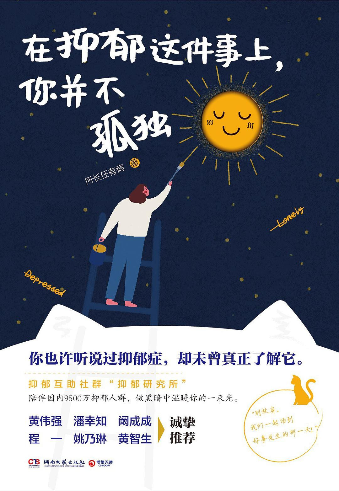

|  |
在抑郁这件事上，你并不孤独 |
自序
第一部分 抑郁总在发生，故事各有不同
放弃从17层跳楼后，他在精神病院等开门
作为艺术生的我，认准了北京电影学院美术系。由于目标学校难度较高，我不得不在高三上学期就从老家赴京学美术，怪事在这时开始发生：我发现，秋天和冬天，自己情绪非常低落，一个人惨兮兮地住在地下室，蓬头垢面、邋邋遢遢。可第2年开春回到老家准备文化课时，我又积极起来，学习思路开阔，对生活也充满希望。成绩出来，文化课考得很好，但艺考失利，我落榜了。复读一年，情况一模一样。我只好放弃北电，选择了东北的一所美术学院。
当时我没在意自己的异常，觉得肯定是环境原因：在老家时朋友多，老师看重我，女友对我也好。夏天一来，人情绪也会变好；而秋冬在北京时，因为太缺乏社会支持，才会郁郁寡欢。
现在看，那其实是非常典型的双相情感障碍症状，加上外部环境因素，才让我的情绪周期性地大起大落。
经精神科医生诊断，我的状况需要住院，将被转介到沈阳精神卫生中心。大学辅导员和党委书记闻讯赶来，带我过去办了住院手续。让我意外的是，书记和其他男老师接力陪我住在医院，贴身照顾。这给了我莫大的支持。然而，在精神病院，我受到了一个非常不人道的待遇——他们用了一种陈旧的疗法，电休克疗法（ECT）。
ECT，其实就是杨永信电击治疗的正规版本。把患者绑在床上，往静脉里注射麻醉药使其失去意识，然后给大脑通电。等患者醒来，治疗已经完成了。
这种疗法让我的情绪变得异常暴躁，更想自杀了。那时我的父母已经来了，我想到一个办法。我跟我爸说：“我想喝罐装可乐。”
我的真正目的是用易拉环割腕自杀。当然，精神病院防护措施很好，没有成功。后来我深入了解过ECT，也跟行业内的朋友聊过，他们说这东西早就过时了，副作用太大，而且个体差异大，跟前额叶切除手术一样备受争议。我住院是6年前，那会儿ECT大概还不像今天一样，被严格限制使用。在住院的两周内，我接受了四五次电击治疗，因无法忍受而喊停了。
遗憾的是，2015年支教结束，脱离了孩子们、女朋友和支教同事们的关爱，回到萧条的东北，我再一次陷入抑郁。
这次是稳定的、持续性的、恶劣的抑郁，伴随焦虑、恐惧。我不知道怎么和同学、舍友、老师相处。后来我了解到，我所在院校的抑郁症和双相情感障碍发病率很高，每100个人就有四五个在服药的。我用了一种新办法缓解抑郁：拼命学习。
我开始疯狂学英语，过四六级、考研究生……说实话，我对英语也不是很感兴趣，但我发现，学习的时候能进入心流状态不抑郁！
我试过玩游戏，玩的时候不抑郁，玩完却更抑郁，我猜可能是因为中国社会不鼓励人玩游戏。虽然在玩游戏时能获得即时性的快乐，但玩游戏本身并不能得到自我的心理奖赏。
被男老师推下深渊，我不愿世上再多一个房思琪
我就是爸妈口中的“垃圾”
尽管还在上大学，秦赛还是试着创业，试图以此让自己忙起来，忘记内心的忧愁。他用多年兼职的积蓄开了一家美瞳店，但不到一年就倒闭了。那一天，他一个人把剩下的东西搬回了出租房，特别凄凉。到了晚上，他合计了一下欠款数额，算上利息，一共10万。
接下来的日子，秦赛十分窘迫，工作没找到，手头上的钱也分文不剩，还欠了外债。情急之下，他去了一家保险公司，而为了尽快找到客户签单，他差点被骗去做传销。
遭家暴抑郁后，我把丈夫送上了法庭
我不是一名优秀的老师，我抑郁了
我想了一下，觉得这个建议很好，还可以让医生瞧瞧我的失眠问题。于是，我去了市里的一家医院，在医生面前情绪激动地说了两个多小时，直到他们快下班。最终，我被确诊为双相情感障碍，也就是躁郁症。医生想给我开病休证明，但我休息了，孩子们怎么办？我拒绝了医生的好意，让他给我开了一些药，就匆匆离开了医院。
偶尔，我也向我爸妈说起我患躁郁症这件事，他们说我就是爱瞎想。我表妹是学医的，我给她打电话，想问问她那些药物吃多了会不会对大脑或者肝功能有影响。没想到，她在电话里连续数落了我一个多小时，“早就让你别去那种穷山沟里了，你偏不听”。
慢慢地，我连强迫自己教好这些孩子的干劲都没有了，每天浑浑噩噩地度日。睁开眼睛就开始自责，闭上眼睛还是自责。
每天我依旧6点多起床，给自己做早饭，简单梳洗后走到村头开始跑。到了下午，孩子们放学后，我继续回到乡间的小路上追着夕阳跑步。5千米是一个奇妙的节点，之前感觉浑身散架了一样，腿都迈不动了，可5千米之后，我呼吸着夹杂着黄土的干燥空气，身体竟轻盈了起来，这让我感觉整个人都放空了。
时间久了，也有学生跟着我，我在前面跑，他们一群人在后面追，有说有笑。晚上回家，我拿热水洗把脸、泡个脚，入睡也不那么困难了。
有一天，宋权的爷爷搭别人的车来县里购置生活物品，还专门拎着一篮子鸡蛋来学校找我，说这是家里的芦花鸡刚下的。临走时，他又说：“小刘老师，咱这地方穷，孩子也不好管，你可以爱他们，引导他们，你甚至可能影响个别学生的人生，但不可能影响所有人。”
我不想成为妈妈那样的人
她希望我方方面面都是佼佼者，这样她在她的班级里、学生家长面前，脸上才有光。如果我哪件事没做到最好，哪次考试没进入前几名，她就先吼我，然后开始哭，接着又在家里唉声叹气好几天，说我辜负了她的希望，说“你这样让妈妈在学生面前还有什么威信？”之类的话。
最终，写着“重度抑郁症且有严重自杀自残倾向”的诊断书交到了我妈手上。我妈盯着我，还是不敢相信，问我：“你爸这样对我们，我都没想去死，你还要去死，你是不是整天瞎琢磨想太多了？”
不做笼中金丝雀，挣开枷锁飞往自由
等到上初中，我自学课程已经有些吃力，于是舅舅每天下午都会打电话给我辅导学习。也恰好是这段时间，他在国外的生意状况不好，脾气开始变得暴躁，和小时候耐心待我的样子简直判若两人。每天在电话里，我都要受他的辱骂，有时甚至会波及父母。骂完他还要我总结每天的学习心得，总结得不好，就继续骂我。
16岁的时候，我按照家里的规划出国留学。当时因为从来没去学校上过学，加上对即将去的国家有着极大的好感，所以我非常兴奋，对留学之旅抱有很大的期待。
可我没想到的是，自从住到舅舅家里，我就失去了人身自由。
从前每个下午折磨我的电话辱骂，直接活生生地出现在我眼前。舅舅身材高大，声音洪亮，每次发怒的时候都俯视着我，非常有威慑力。我常在他的言语攻击下瑟瑟发抖。
我在他的长期洗脑之下，产生了一种我不配为人的感觉。
在舅舅的眼里，我是一个铁石心肠、自私自利、愚蠢而不自知的人。我在这个家里是多余的，他是出于亲情而不得不接纳我。这样的我不配谈恋爱，不配获得幸福。
很快我对男友再也提不起兴趣，就和他分手了，重新回到一个人的孤独里。
被精神控制的日子
这样的生活持续到高三上半年。那时候我准备考大学，虽然成绩能考上国外的大学，但学费非常高，我有些犹豫。这时候，舅舅忽然开始对我说一些奇怪的言论。
他说，在自然界里，想要获得什么东西都要付出相应的代价，而雌性动物给雄性动物付出的，往往就是身体。意思就是如果我要继续留学，就要献出自己的身体。此外，他准备给我1000元作为初夜的庆祝。
高中三年，因为机票太贵，我都没有回过国，就算是过年也是在舅舅家过。临近毕业的时候，妈妈来国外探亲旅游。当她看到我天天被人身攻击的惨状，才终于知道自己的女儿过着什么样的生活。她当场和舅舅撕破脸，并支持我回国，帮助我成功逃离舅舅的掌控。我非常感谢她没有成为压死我的最后一根稻草。
人前嬉皮笑脸，人后独自抵挡抑郁
原来的我，不论身体如何，都一定会坚持上班，但那段时间，我屡屡旷工，把自己关在家里以泪洗面。我平时几乎没有为自己的病痛流过眼泪，甚至几年前母亲因为癌症去世，我也只掉了几滴眼泪。这次背叛严重影响了我的情绪，让我蓄了30年的泪水倾泻而出。
每当我感到悲伤的时候，我都会选择自残。我喜欢看血流出来的样子，它可以让我暂时忘掉内心的疼痛。如今，我手臂和腿上都没剩多少好皮肉，全是触目惊心的伤疤。
可小于还是在7月的时候突然跟我说，希望和我回到朋友的关系，而且他会搬回原来的住处，不会再来我家了。
如此突然的告别让我猝不及防，我没办法接受。哪怕提前一些告诉我，让我有个心理准备也好，但他没有，他说不回来就真的没有再回来了。
8月，我在严重失眠一段时间后接受了小于已经离开的事实。我安慰自己，回到朋友关系的话还可以继续正常聊天，可他的表现不像是要继续和我做朋友，而是要疏远我，要跟我划清界限。在把话挑明以后，我了解到他傍上了一个比他大4岁的职场女性，于是我们之间就只剩下债务关系，再也没有朋友的情分存在。
既然不爱我，为何当初生下我？
崽崽很听话，从来不会咬人，尤其是家人。在它眼里，父亲同样也是家人。只有在父亲打我的时候，它才会冲着父亲吼叫，护着我。可是没想到，父亲竟然喂崽崽吃巧克力，而我特别强调过，不能给崽崽喂巧克力。我哭着央求他开车送崽崽去医院，他不答应，坐在沙发上看电视。我只好打电话给表哥，一起送崽崽去医院洗胃。
在医院，我哭了一晚上，眼睛都哭疼了。表哥和表嫂也在医院里陪了我一晚上，而父母一个电话也没有。我心灰意冷，觉得在这个家里没有半点温暖。
他对我那么好，但越是这样我心里越愧疚。我在深得他照顾的同时，觉得自己不值得被这样温柔对待。
我们在一起快一年，我见过他的父母，但是我父母没见过他，只是听我说过他。
后来，我父母莫名其妙地开始跟我说他的坏话，说他工作太忙了，根本没办法好好照顾我，还挑剔他的收入和家庭出身，等等。我无法忍受他被这样轻视，崩溃地蹲在地上哭了很久。
我知道自己的处境，如果男友继续和我在一起，将来免不了要和我的父母接触，而我的父母是如此狭隘与丑恶，我不想让干净的他也接触这些。
于是，我向他提出分手，开始躲着不见他，甚至拿自杀威胁他。他始终没有答应和我分手，但他害怕我伤害自己，只好不再主动和我联络。我们还保留着对方的联系方式。他暂时还没有找女朋友，所以我暂时也没什么心理负担。他值得更好的女孩子，至少不是我这样的。
有时候朋友约我出去玩，他在场，我也只是像普通朋友那样偶尔和他说几句话，对从前那段过往绝口不提。
很多人的故事集。感觉他们的故事更为沉重，抑郁程度也更严重，对我来说参考意义不大。看的过程中更多的是看故事、猎奇的心态。